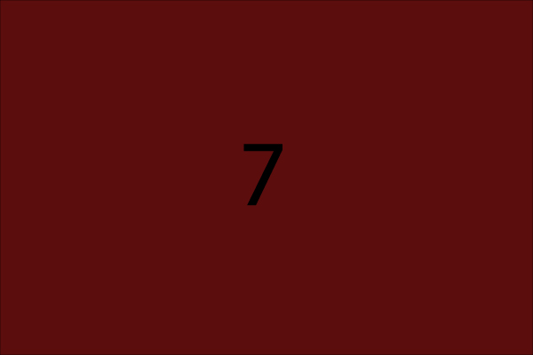
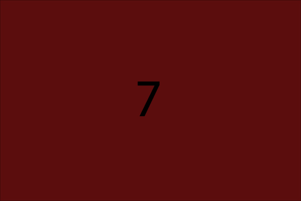
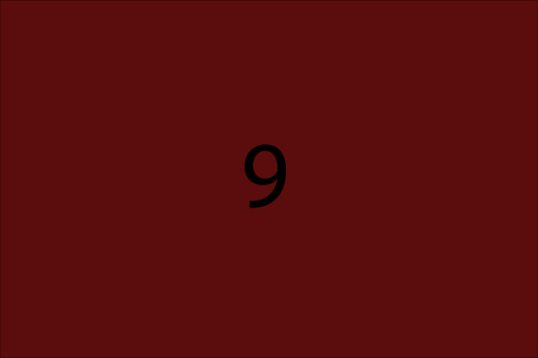
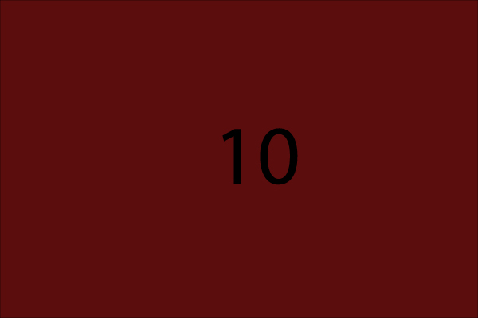
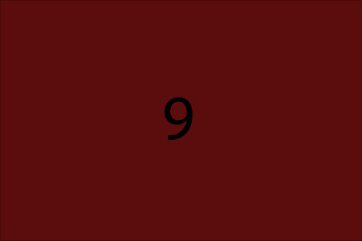
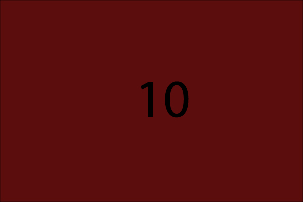

Ici vous retrouverez la majorité des créations visuelles et des sites web que j'ai pu créer lors de mes différentes expériences ! J'ai eu la chance de travailler avec des particuliers qui ont des projets sur le thème de l'écologie et du développement personnel via l'art, avec l'Alliance Française de Loja située en Équateur sur des projets évènementiels autant officiels que culturels et enfin j'ai aussi eu la chance de faire partis d'une équipe soudée au sein de l'entreprise Solocal Marketing Service à Angoulême, qui m'à permie d'approfondir mes connaissances dans le développement web en me confrontant a des projets aux demandes toujours plus stimulantes (en partie grâce aux deadlines serrées !). Certains visuels ne sont pas encore à votre disposition, pour les raisons que les projets sur lesquels j'ai pu travailler ne sont pas encore révellés au grand jour ! Mais cela ne saurait tarder ! Je vous souhaite une bonne visite et n'hésitez pas à me contacter! Dorian. --> raconter mon parcours LM en quelques lignes pas plus :!: synthétique --> reprendre quelques element du texte deja présent mais éviter trop le détail --> bonne lougueur
coucou 

 


